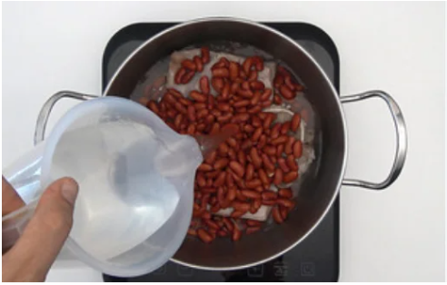
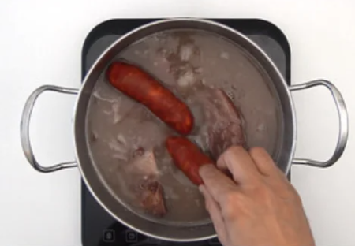
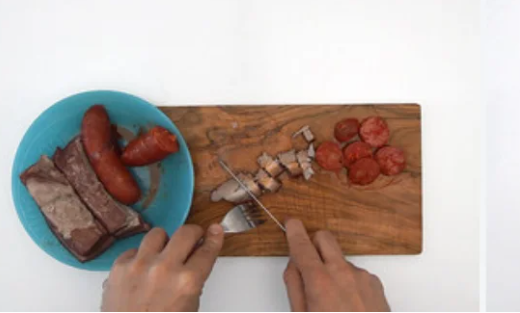
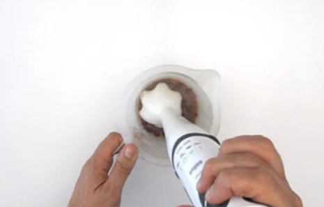
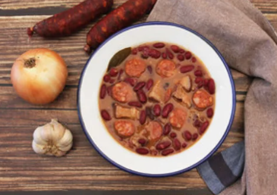

Judias Pintas
Volver al menú🔙
Ingredientes
- 5 y ½ puñados de judías pintas (unos 300 g. de judías pintas aproximadamente)
- 1 hueso de jamón
- 500 g. de panceta fresca salada
- 2 chorizos (uno picante o uno dulce)
- 1 cebolla
- 2 dientes de ajo
- 50 g. de arroz
- 1 hoja de laurel
- Sal (al gusto de cada casa)
Preparacion de las judias 🍽
- Si cocinamos en una cacerola normal lo dejamos una hora y media a fuego medio o hasta que la alubia esté tierna, pero no pasada, recordad que hay que remover de vez en cuando. Si se quedan secas añadiremos un poco de agua templada.

- A continuación añadimos el chorizo y lo dejamos otros diez minutos. Retiramos con un cucharón parte de la grasa de la cocción con el aceite, no habrá mucho pero así estará un poco más suave.

- Quitamos el chorizo y la morcilla si la hemos añadido, y cortamos en rodajas, que cada uno se ponga luego la cantidad que guste.

- Ponemos en un vaso de batidora (sino tenéis, con un tenedor) un par de cucharada de judías pintas, un poco de caldo y trituramos. Incorporamos este “puré” a las judías y dejamos que se terminen de hacer. Os garantizo que así se ligan que da gusto.

- Por último, tanto si usamos olla express como si usamos cacerola, añadimos un puñado de arroz y dejamos que se cocine hasta que el arroz esté listo. Retiramos del fuego y dejamos reposar un poco antes de servir. Echamos las judías pintas en un
plato hondo y a comer. ¡Así de fácil!
